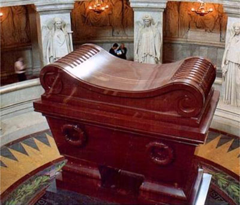
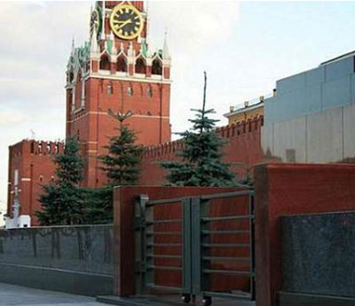
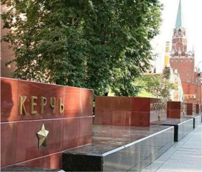
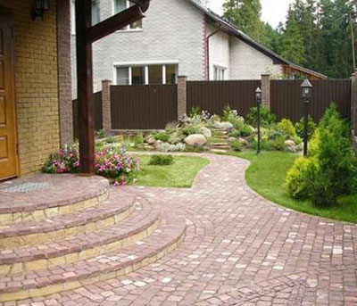

<div class="">
  <div class="container">
    <div class="row">
      <div class="col-12">
        <h2 class="pt-5">О нас</h2>
        <div class="line-2 my-5"></div>
        <p>
          История месторождения малинового кварцита насчитывает более 200 лет. Период бурного строительства в
          Санкт-Петербурге положил начало расцвету горного дела и в Карелии. В те времена добываемый камень именовался
          соответственно - Шоханским порфиром или вельможным камнем. Причиной тому была, по всей видимости, его
          схожесть с египетским порфиром сургучного цвета. Последний с незапамятных времен являлся традиционным
          материалом для отделки особо торжественных гробниц. Это, видимо, во многом предопределило судьбу и
          шокшинского кварцита. Так, предметом особой гордости многих наших соотечественников является тот факт, что
          именно из шокшинского кварцита изготовлен саркофаг Наполеона, что в Париже.
        </p>
        <p>
          В советское время разработка месторождения возобновилась с 1922г. В 1938 году на Международной выставке в
          Нью-Йорке малиновый кварцит получил высокую оценку. До 1940 года месторождение отрабатывается, добывая
          крупные блоки кварцита, для изготовления декоративного и облицовочного камня и крупноблочных строительных
          изделий. Для данной цели расходуется всего лишь более 3-х % разрабатываемого кварцита. В 1940 году
          "Главогнеуопр" в лице Ленинградского Института Огнеупоров на основании опробования месторождения и
          проведенных технологических испытаний дают заключение - кварцит можно характеризовать как пригодный для
          производства огнеупора.

        </p>
        <p>
          Особое место в истории разработки карьера занимает использование малинового кварцита в качестве технического
          сырья для стекольной промышленности. При помоле составных компонентов стекла и эмали в шаровых мельницах
          используются мелющие тела и футеровки из малиновых кварцитов. Уникальные физико-химические и механические
          свойства именно малинового кварцита обусловили широкое его применение. В советское время более 20 предприятий
          по всему СССР использовали его в шаровых мельницах. До 1992 года практически основной продукцией Шокшинского
          карьера были футеровки и мелющие тела. Период перестройки заставил предприятие вновь наладить производство
          брусчатки и мостовой шашки по европейскому стандарту (мелкие мостовые камни размером 100мм х 100мм х 100мм).
          В числе последних крупных работ с применением брусчатки 200x100x100 - мощение президентского дворика в
          Кремле. Современное название месторождения "Шокшинское месторождение малиновых кварцитов".
        </p>

        <p>
          Месторождение расположено в Вепсской области Республики Карелия на западном берегу Онежского озера, в 60км от
          города Петрозаводска.
        </p>
        <p>
          Согласно протоколу ГКЗ № 8846 от 9. 10. 81 г. утверждённые запасы малинового кварцита по Шокшинскому
          месторождению составляют более 1,3 млн. м3

        </p>
        <p>
          Шокшинское месторождение кварцитов и песчаников ОАО « Кварцит» является сырьевой базой для производства
          брусчатки, футеровки для шаровых мельниц, мелющих тел, блоков для изготовления декоративных облицовочных и
          ритуальных изделий, а также камня для ландшафтных работ.

        </p>

      </div>
      <div class="col-md-9">
        <p>
          <strong>
            Саркофаг Наполеона, центральная экспозиция музея Les Invalides, Париж
          </strong>
        </p>
        <p>

          В 1847 году архитектор Луи Висконти получил из Карелии 47 блоков малинового кварцита для создания саркофага
          Наполеону Бонапарту. Неудивительно, что выбор пал именно на шоханский порфир - уже тогда за "шокшей"
          закрепилась репутация царского камня, камня правителей - широкое использование которого в отделке
          императорских резиденций нашло широкую огласку в Европе. Эксклюзивные памятники из малинового кварцита и
          сегодня изготавливают для французских клиентов.
        </p>
      </div>
      <div class="col-md-3">
        
      </div>
      <div class="col-md-9">
        <p>
          <strong>
            Мавзолей В.И.Ленина, Красная Площадь, Москва
          </strong>
        </p>
        <p>
          Мавзолей В.И.Ленина на Красной площади в Москве - третий, ныне существующий вариант построен по проекту
          выдающегося Советского архитектора А.В.Щусева и коллектива авторов (1929—1930). Усыпальница В.И.Ленина - одна
          из вершин советской архитектуры. Здание отделано мрамором, лабрадором и малиновый кварцитом, в частности из
          него изготовлены входные тумбы, облицована венечная часть сооружения, а также буквы ЛЕНИН на черном
          лабродоре.
        </p>
      </div>
      <div class="col-md-3">
        
      </div>
      <div class="col-md-9">
        <p>
          <strong>
            Мемориальный архитектурный ансамбль «Могила Неизвестного Солдата»
          </strong>
        </p>
        <p>
          Ансамбль построен по проекту архитекторов Д. И. Бурдина, В. А. Климова, Ю. Р. Рабаева и скульптора Н. В.
          Томского в 1967 году (черный лабродор, красный гранит и малиновый кварцит). С 12 декабря 1997 в соответствии
          с указом Президента России пост номер 1 почётного караула был перенесён от Мавзолея Ленина к Могиле
          Неизвестного Солдата. Караул осуществляется бойцами Президентского полка. Смена караула происходит каждый
          час.
        </p>
      </div>
      <div class="col-md-3">
        
      </div>
      <div class="col-md-9">
        <p>
          <strong>
            Брусчатка малиновый кварцит
          </strong>
        </p>
        <p>
          Мощение брусчаткой из малинового кварцита известно уже не одно столетие. Пол Казанского Кафедрального собора
          вымощен малиновым кварцитом в комбинации с мрамором и диабазом. Под миллионами ног прихожан только шоханский
          порфир сохранил свою форму и объем, в то время как окружающие его камни значительно износились. Помимо
          удивительной стойкости к физическим и погодным воздействиям, малиновый кварцит обладает уникальным цветом и
          экологической чистотой. В любой, даже наиболее изысканный и эксклюзивный дизайн проект загородного дома,
          идеально вписывается брусчатка из малинового кварцита, натуральный камень придает дому аристократичность и
          утонченность.
        </p>
      </div>
      <div class="col-md-3">
          
        </div>
        <div>
          Источник <a href="http://kartravel.ru">kartravel.ru</a>
        </div>
      <div class="line-2 my-5"></div>
    </div>

  </div>
</div>
